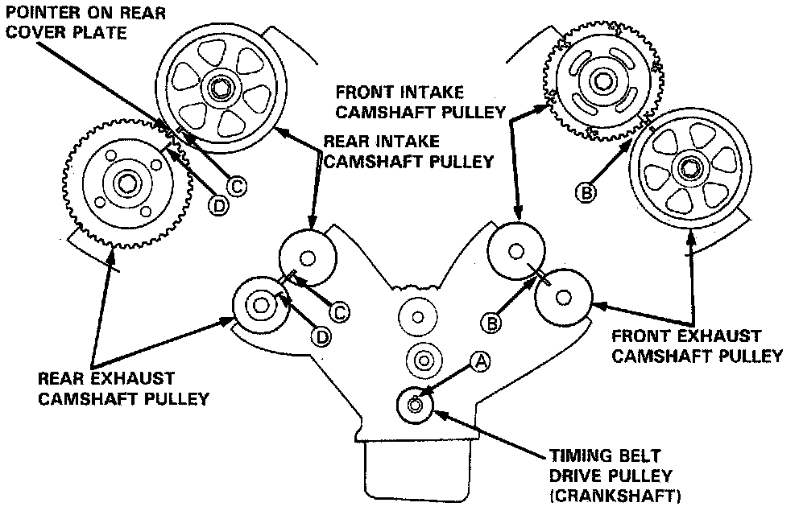
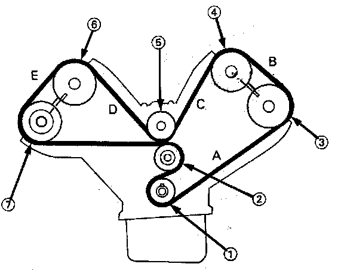
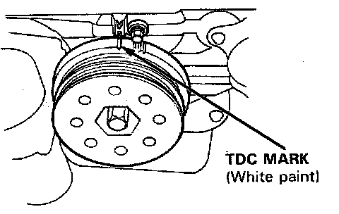
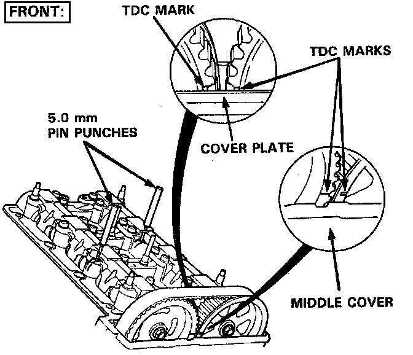
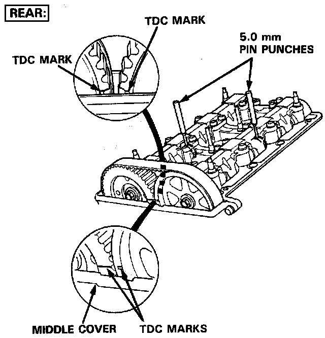
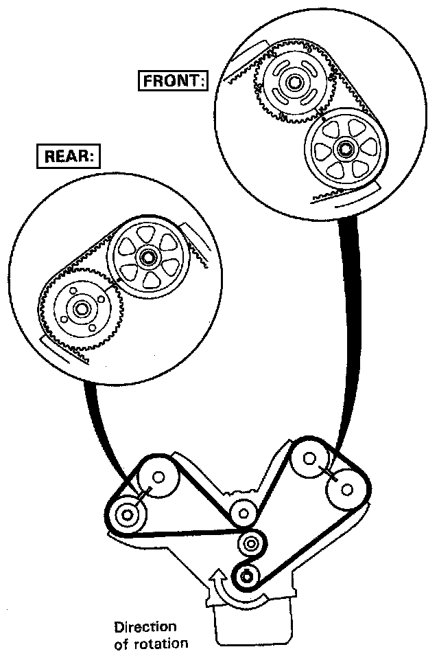

Installation
INSTALLATION

Timing Belt
NOTE:
- Turn the crankshaft so that the No.1 piston is at top dead center (TDC).
- Replace rubber seals if damaged or deteriorated.
- Prior to installing the cylinder head cover, apply a thin layer of liquid gasket to the mating surface of the cylinder head cover and rubber seals to prevent the rubber seal from falling of.
- After installation, fill the engine with oil up to the specified level, run the engine for more than 3 minutes, then check for oil leakage.
- When installing a new crankshaft;
(1) Tighten the crankshaft pulley bolt to 28O N.m (28 kg.m, 203 lb-ft)
(2) Loosen it
(3) Retighten it to 250 N.m (25 kg.m, 181 lb.ft)
CAUTION. Do not rotate the crankshaft or camshaft without installing the belt. The piston could hit a valve and damage may result.
1. Install the timing belt in the reverse order of removal.
Only key points are described here.
2. Remove all spark plugs.
3. Position the crankshaft and the camshaft pulley as shown before installing the timing belt.
A. Set the crankshaft so that the No.1 piston is at top dead center (TDC).
NOTE: Turn the crankshaft until its keyway is facing up.
B. Align the TDC mark on the front exhaust camshaft pulley and front intake camshaft pulley to the pointer on the front timing belt cover plate.
C. Align the TDC mark on the rear intake camshaft pulley to the pointer on the rear timing belt cover plate.
D. Align the rear exhaust camshaft pulley one half tooth clockwise past TDC.


4. Install the timing belt in the sequence shown.
(1) Timing belt drive pulley (crankshaft)
(2) Adjusting pulley
(3) Front exhaust camshaft pulley
(4) Front intake camshaft pulley
(5) Water pump pulley
(6) Rear intake camshaft pulley
(7) Rear exhaust camshaft pulley.
5. Tension the timing belt between the pulleys in the sequence A to E as shown. Refer to timing belt tension adjustment.
6. Temporarily install the lower cover and crankshaft pulley.
7. Check the crankshaft pulley and the camshaft pulleys at TDC.
8. If the camshaft pulleys are not positioned at TDC, remove the timing belt and adjust the positioning of the pulleys, then reinstall the timing belt.

Front:

Rear:

NOTE:
- Refer to timing belt removal.
- Bring the "UP" mark of the camshaft pulleys to the top, and align the TDC marks on the pulleys.
- Align the holes on the camshaft holder pipes to the camshaft holes, insert 5.0 mm pin punches and fix them at TDC.
- Remove the pin punches after the timing belt has been reinstalled.

NOTE:
- Prior to installing the cylinder head cover, apply a thin layer of liquid gasket to the mating surface of the cylinder head cover and rubber seals to prevent the rubber seal from falling off.
- After installation, fill the engine with oil up to the specified level, run the engine for more than 3 minutes, then check for oil leakage.